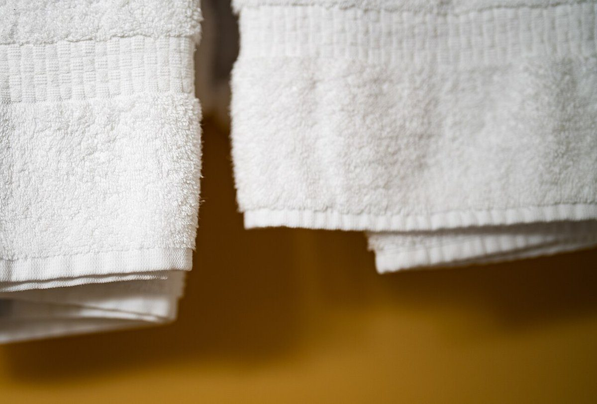

About
店のこと
このページの「ある日の想像」は、制作側が想像して書いたものです。お店の実際の様子や考えを示すものではありません。確認できていることは、所在地とInstagramのみです。
ある日の想像(制作側が想像して書いたもの)
白いパン屋さんの、朝から夕方まで
- 朝
粉と水をあわせて、手で生地をまとめる。そんな時間があるかもしれない、と想像する。
- 昼
焼き上がりの香りが広がって、通りがかりの人が足を止める。そんな場面を思い浮かべる。
- 夕
紙袋を抱えて帰る人の姿。家で袋を開けるのが楽しみになりそう、と想像する。


写真は今治市の風景や実際のお店ではなく、イメージとして選んだ撮影地不明のフリー素材です。
ご案内
確認できたこと
| 所在地 | 〒794-0802 愛媛県今治市南鳥生町2丁目1-5 |
|---|---|
| 電話 | なし |
| 営業時間 | 準備中 |
| 定休日 | 準備中 |
| ご予約 | 準備中 |
| 駐車場 | 準備中 |
| SNS | Instagram @shironeko_2025 |